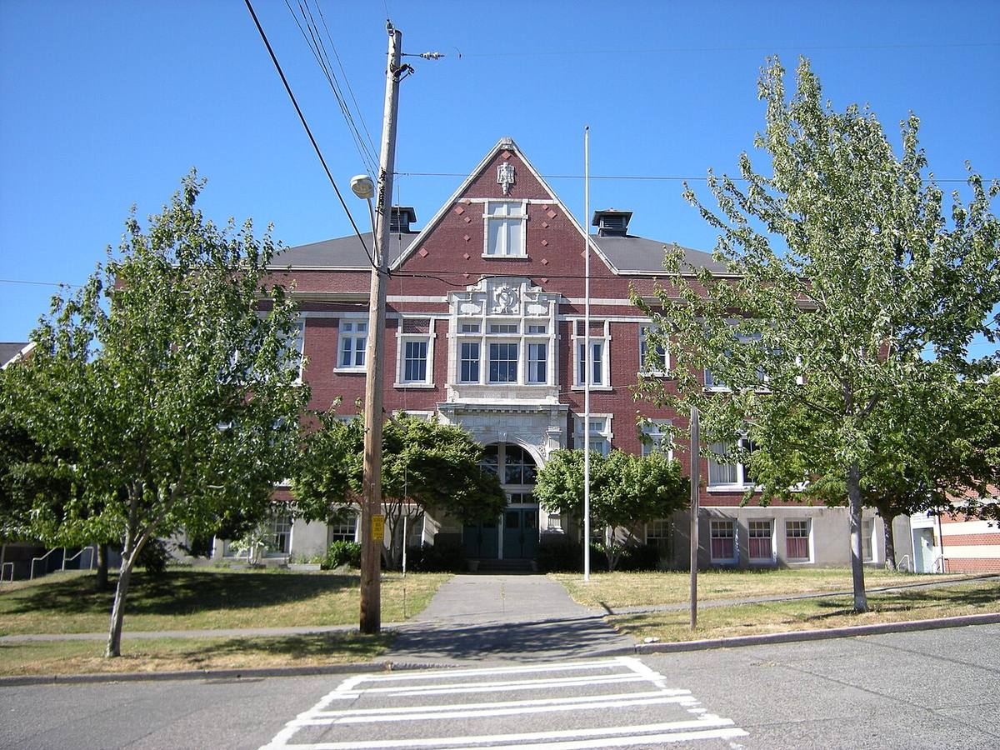

Living in Gatewood

Gatewood is a neighborhood of West Seattle in Seattle, Washington. Situated on the highest hill in Seattle it overlooks Puget Sound, the Olympic Mountains, and downtown Seattle. It is generally bounded to the north and south by Raymond and Thistle Streets respectively, to the east by 35th Avenue, and the west by California Avenue and Fauntleroy Way. The neighborhood's landmarks include the Gatewood School, currently an elementary school. It is minutes from Lincoln Park. (From Wikipedia, CC BY-SA 4.0)
Gatewood is a neighborhood in West Seattle, Seattle with about 7,401 residents. The typical home value is about $863K (-0.9% over the past year), and 109 homes sold in the last 12 months. It is somewhat walkable, with lower crime than most neighborhoods in the area.
Home prices and the market
| Typical home value | $863K · -0.9% over 12 months |
|---|---|
| Homes sold, last 12 months | 109 · median sale price $800K · 21 were condos |
| Homes for sale (estimate) | 26 · homes typically go under contract in 26 days |
| Median household income | $140K · 88th highest income of 155 |
Schools
| Elementary | Gatewood Elementary School, 0.3 mi · 66% meet standard Area average 56% · 110th best elementary schools of 155 |
|---|---|
| Middle school | David T. Denny International Middle School, 0.9 mi · 41% meet standard Area average 42% · 145th best middle schools of 155 |
| High school | West Seattle High School, 0.5 mi · 72% meet standard Area average 63% · 113th best high schools of 155 |
| Nearest college | South Seattle College, 1.7 mi |
Share of students meeting the Washington state standard in English and math (2024-25). The nearest school is not always the assigned school; check with the school district.
Safety
About 17 crimes per 1,000 residents a year (violent crimes counted three times), lower crime than most neighborhoods in the area: 39th lowest crime of 155. Based on mapped police incidents in this neighborhood, scaled to the city's FBI-reported rate. Busy commercial areas can look high because visitors are not counted as residents.
Getting around
| Walkability | 15.5 of 20 (somewhat walkable) · 63rd most walkable of 155 |
|---|---|
| Light rail or train | SODO, 3.9 mi · 127th closest to rail of 155 |
| Nearest bus stop | California Ave SW & SW Fontanelle St, 0.22 mi |
| How residents commute | 6% take transit · 39% work from home |
Everyday amenities
| Grocery store | Thriftway, 0.5 mi · 1 within a mile |
|---|---|
| Pharmacy | Super Supplements, 0.6 mi |
| Restaurants | 6 within a mile · 116th most restaurants nearby of 155 |
| Shopping | Target, 1.2 mi |
| Hospital | Harborview Medical Center, 5.4 mi · 5 clinics within 2 miles |
| Library | High Point Library, 0.8 mi |
Parks and recreation
| Nearest park | Orchard Street Ravine, 0.1 mi · 205 acres of parks within a mile |
|---|---|
| Large green space | Lincoln Park, 0.5 mi |
| Walking trail | Duwamish Trail, 1.8 mi |
| Gyms, spas and studios | 2 within a mile |
| Golf | West Seattle Golf Course, 1.1 mi |
Thinking about Gatewood?
Rachel Yo, Realogics Sotheby's International Realty, can walk you through homes for sale, recent sales and what to know before you buy here.
Your details go only to Rachel Yo at Realogics Sotheby's International Realty to answer your request. They are not sold or shared, and your mobile number and texting permission are never shared with anyone for marketing.
Nearby neighborhoods
- High PointSeattle · $658K
- RoxhillSeattle · $649K
- SeaviewSeattle · $898K
- Fairmount ParkSeattle · $763K
- FauntleroySeattle · $935K
- South DelridgeSeattle · $585K
Data as of: home values Zillow 2026-09; recorded sales Nov 2025 – Oct 2026; schools OSPI 2024-25; Census ACS 2020-2024. Distances are straight-line from the center of the neighborhood.